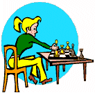
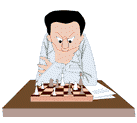

|  |  |
Tournament News & Notices:Date: Feb. 15, 2004 (updated Feb 18)To: Pip J, teachermom322, taza, Geomomo, Ælle the Saxon, grillyx From: jestone Hey friends! Here is my proposal to you all for a friendly tournament of loop chess.
Terry [ ttrotter3@yahoo.com or ttrotter@telesal.net ]
Pairings are these:
#2 has white with #3, #5, & #7; black with the others. #3 has white with #4, #6, & #1; black with the others. #4 has white with #5, #7, & #2; black with the others. #5 has white with #6, #1, & #3; black with the others. #6 has white with #7, #2, & #4; black with the others. #7 has white with #1, #3, & #5; black with the others.
|
Last update: April 18, 8:00 p.m. (CST) |
||||||||||||||
| #1 | #2 | #3 | #4 | #5 | #6 | #7 | W | L | D | SCORE | ||||
| jestone | . | . | ||||||||||||
| Ælle the Saxon | . | . | ||||||||||||
| grillyx | . | |||||||||||||
| geomomo | . | 0 | . | |||||||||||
| teachermom322 | . | . | ||||||||||||
| Pip J | . | . | ||||||||||||
| taza | . | . | ||||||||||||
Player information
Here I will present some information about the persons in our tournament, so that we can get to know the "real person behind the userid". (If you wish to share your own personal facts, just let me know. Nothing will be shown here without your permission.) I will begin with myself. To see photos of me & my family, click HERE.
Pip JHere is what Pip has written to us:
teachermom322Cheryl Elder: She is an elementary school music teacher who lives in Milwaukee, Wisconsin. She's 42 years of age, & her birthday is March 22.
tazaTaza's name is William, age 51. He's teachermom's husband. He works as a bricklayer when the weather permits and he is a general laborer during the off seasons.
GeomomoMy name is George Robinson, married to Maureen for the last 40 years. Nickname MoMo (now you know how my nick "geomomo" originated). I was born and raised in Northern Ireland, served 12 years in the Royal Air Force, have one son who was married last year. He is serving in the British army in the Irish Guards. He was in Iraq last year and his regiment captured Basra and received the battle honours for that campaign. My Mum is 93 and in failing health. I am 60 in April and have been retired for 5 years.
Ælle the SaxonThere's not much to tell. My name is Philip du Nard. I live in Granite City, Illinois. I am single and 49 years old. Years ago, I had a brief career in the profession of chiropractic which was cut short when I assumed the care of my disabled mother who was in a pretty helpless state and later my grandmother, also old and disabled. I did this until they passed last year. Currently, I'm struggling to regain my own health while I figure out what to do next.
grillyxI'm Phil Watts, aged 41 and I'm an accountant living just east of London, England. I could explain how I arrived at 'grillyx' for a nick, (it should really be grilly-x' but I'm a bit lazy), but it's really too embarrassing; I'll just say that it came about during an especially drunken evening at university a long time ago... I will have been married for 10 years this year to Jo, we have a son, James, who will be 7 in April, and daughter Emma who will be 3 in June. |
| Comments? Send e-mail. | Back to top | Go back to Home Page | Go back to Contents |